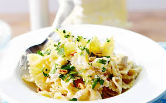

Pasta gremolata met ricotta

Ingredienten
- 500g farfalle
- 1 ei pijnboompitten
- 1 teentje knoflook
- 1 citroenschil
Bereiding
- Kook de pasata beetgaar in een ruime hoeveelheid gezouten water.
- Snipper de peterselie en de knoflook. Vermeng ze met de geraspte citroenschil.
- Schep de ricotta door de warme pasta en verdeel over de borden. Bestrooi met de gremolata en werk af met de pijmboompitten